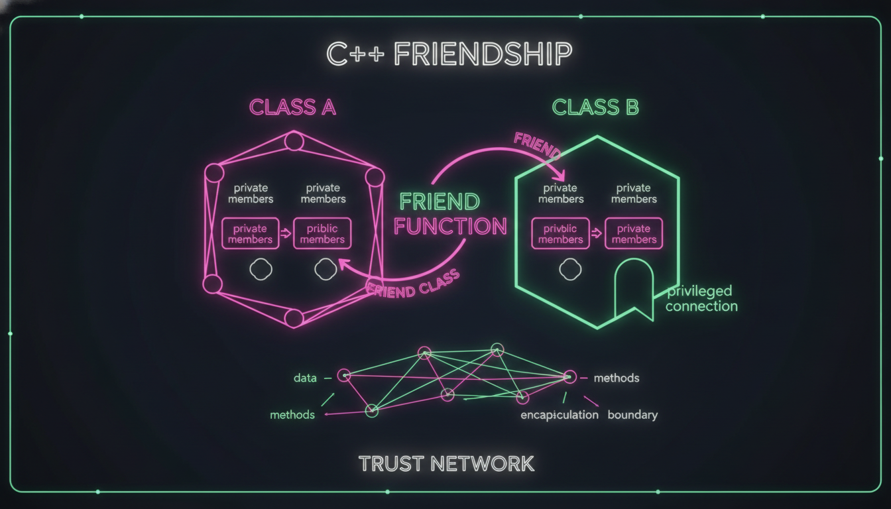

friend функції, friend класи, оператори дружби

Дружня функція — це функція, що не є членом класу, але має доступ до його приватних та захищених членів.
#include <iostream>
class Box {
private:
double width;
double height;
double depth;
public:
Box(double w, double h, double d) : width(w), height(h), depth(d) {}
// Дружня функція
friend double getVolume(const Box& box);
// Дружня функція для порівняння
friend bool isLarger(const Box& a, const Box& b);
};
double getVolume(const Box& box) {
// Доступ до приватних членів!
return box.width * box.height * box.depth;
}
bool isLarger(const Box& a, const Box& b) {
return getVolume(a) > getVolume(b);
}
int main() {
Box box1(2, 3, 4);
Box box2(1, 2, 3);
std::cout << "Об'єм 1: " << getVolume(box1) << std::endl;
std::cout << "Об'єм 2: " << getVolume(box2) << std::endl;
std::cout << "Box1 більший: " << isLarger(box1, box2) << std::endl;
return 0;
}